Vanilla Almond Biscotti | Baked, Gluten-Free, Vegan
Biscotti are twice-baked, oblong-shaped, dry, crunchy cookies that are often enjoyed dipped in a warm, cozy drink. Traditionally, they are made from flour, sugar, eggs, and almonds or pine nuts. But today I threw tradition out the window! It’s time to create our own gluten-free and vegan traditions, don’t you think? I will make a strong suggestion when making this recipe: double, triple, or quintuple it because they are just that good. I had to make the recipe 2x in a row because Bob kept eating my photo arrangements.
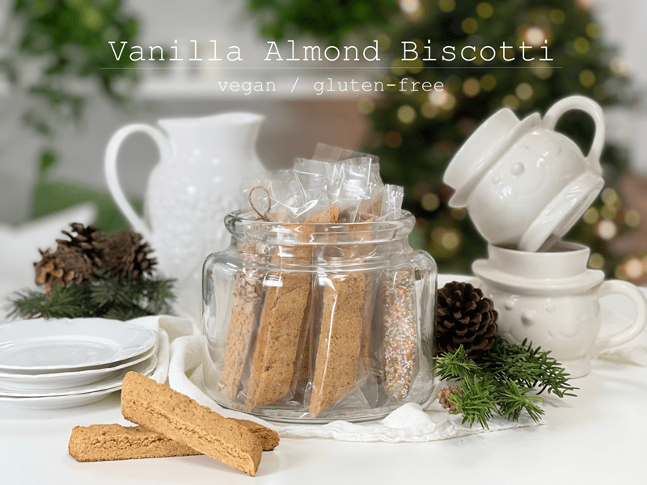
As I mentioned already, biscotti are a very dry, they traditionally are served with a drink, into which they may be dunked. In Italy they are typically served as an after-dinner dessert with a Tuscan fortified wine called vin santo. But I am more familiar with dipping them in coffee, cappuccinos, lattes, hot chocolate, milk (cold or frothed), or black tea. If you are looking for an edible treat for gift-giving, these are perfect because they travel and keep well (sings… to grandmother’s house we go, lalala). A stack of these makes for an excellent gift, wrapped up in a cellophane bag and tied with a ribbon, or better yet, skip the plastic and slide them into a glass container so they can return it and ask for more.
More Ways to Enjoy Biscotti
If you are looking to serve a creative snack at a holiday gathering or ending the perfect meal with something sweet for the palate – biscotti can answer that call! Outside of dipping your biscotti in a drink, let’s explore some of the other creative ways you can add this crunchy cookie to your culinary goals.
- Paired with ice cream – Crumble biscotti into large chunks and sprinkle on top of ice cream, gelato or frozen yogurt for a delicious treat that will be hard to resist. Interested in making your own vegan ice cream? Click (here) for some delicious recipes that I have created over the years.
- Layer in a parfait– Replace the granola in your traditional parfait with biscotti delicious-ness, and breakfast will take a turn for the better.
- Add something new to the fruit platter – Your party’s fruit platter just got a bit more sophisticated.
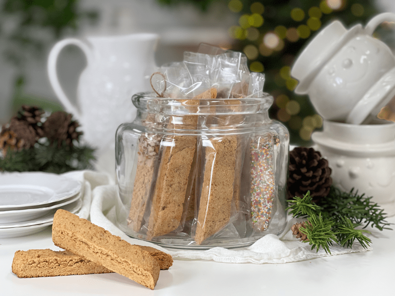
Extracts and Flavors
The basic biscotti recipe uses vanilla extract, but you can also add almond extract or anise extract, which are both classic biscotti flavors. You can also use food-grade essential oils for flavoring; just be careful that you don’t use too much and overpower the taste of the biscotti. Adding orange zest or lemon zest to the wet ingredients is another great idea if you enjoy citrus flavors. There are so many wonderful and delicious combinations!
Add-Ins
Add-ins are another great way to personalize flavors for those you love. Don’t use more than 1/2 cup’s worth in this recipe, otherwise you risk throwing off the ingredient ratios. Regardless of what you add in– nuts, seeds, dried fruit, etc.–it would be best to lightly chop them up so they can better disperse throughout the batter.
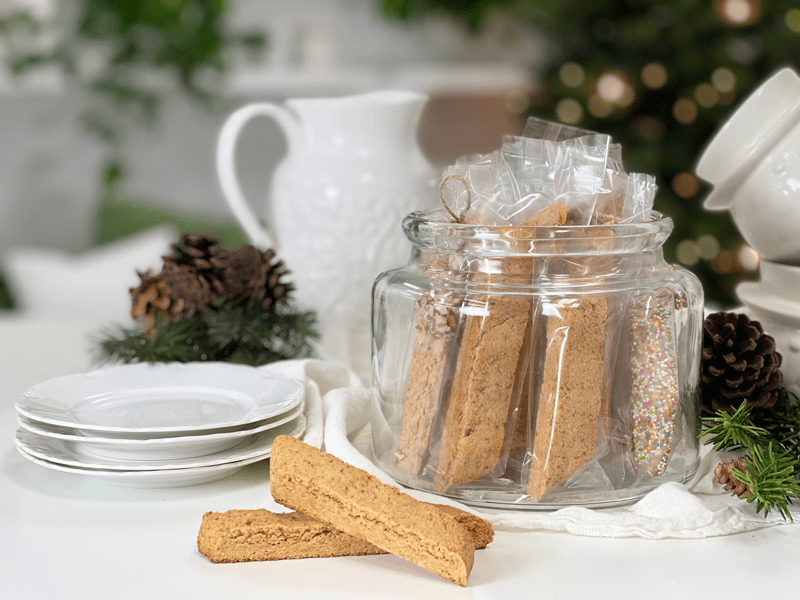
Chocolate Options
Dipping, drizzling, or coating the biscotti in chocolate is always a welcome addition. You can purchase melting chocolate (chocolate chips) or you can make your own. If you are interested in making a raw vegan version, here are a few recipes
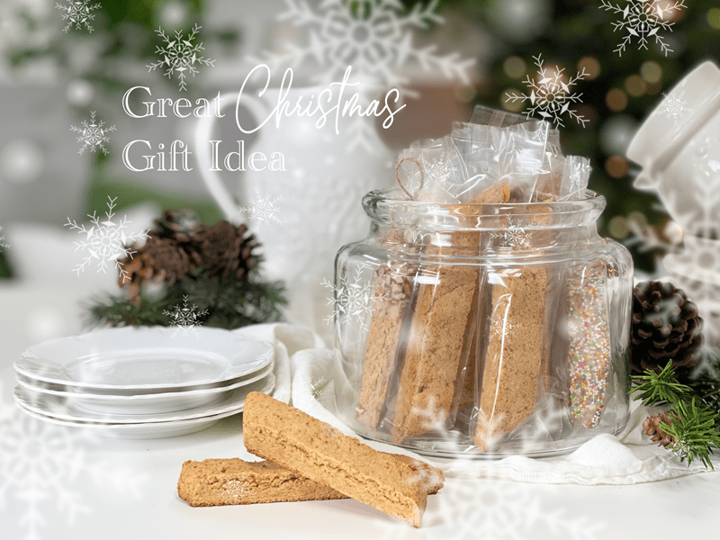
I hope you enjoy this simple yet delicious treat. Just because you choose to eat healthfully doesn’t mean you have to sacrifice flavor. Be sure to leave a comment below–I love hearing from you. blessings, amie sue
 Ingredients
Ingredients
- 1 3/4 cups (196 g) fine almond flour
- 1/4 cup (33 g) coconut sugar
- 2 Tbsp (16 g) arrowroot
- 1 tsp (4 g) baking powder
- 1/4 tsp (2 g) sea salt
- 3 Tbsp (40 g) water
- 1 tsp (5 g) vanilla
- 1/2 tsp (2 g) almond extract
Preparation
- Preheat the oven to 350 degrees (F). Line a large cookie sheet with parchment paper and set aside.
- In a large bowl, whisk together the almond flour, coconut sugar, arrowroot, baking powder and salt. Add the water, vanilla, and almond extract; using your hand, mix until completely combined. Forget trying to use a whisk or spoon.
- Place the dough in the center of the prepared cookie sheet and shape the dough into a log that measures roughly 9″ x 3.25.”
- You can also use your hands to smooth and flatten the edges of the dough log.
- Slide into the oven for roughly 20 minutes or until light golden brown. The center should be firm to the touch.
- If you notice that the center of the cookie looks uncooked (a darker brown color) not to worry. We are going to be baking these for another 40 minutes, and they will be thoroughly cooked when done.
- Remove from oven and place the baking sheet on a cooling tray until completely cool to the touch.
- Place in the refrigerator at least 1 hour or until cold.
- Slide the log onto a cutting board. Remove the parchment paper, placing it back onto the baking sheet.
- Go ahead and preheat the oven to 250 degrees (F) while you work on the next step.
- With a sharp knife, cut the log crosswise, on the diagonal, roughly 1/2″ thick. Return the biscotti slices, cut side down, to the parchment-lined cookie sheet.
- Be sure to let the baked biscotti logs cool before slicing. If you slice them when they are too warm, the cookies will crumble.
- Slicing at a greater angle will result in longer cookies, and less of an angle will produce smaller biscotti.
- Bake biscotti for 20 minutes. Remove from the oven and turn each biscotti. Return to oven and bake for 20 minutes longer. Turn oven off, keep the door closed, and let biscotti remain in the oven for 1-2 hours until cooled (this further dries them).
Decorating (optional)
- This step is completely optional but why not add a punch of “WOW” when you can? Along with chocolate, you can sprinkle chopped nuts, dried fruit, or whatever else might strike your fancy on top of the chocolate so it sticks when the chocolate firms up.
- If using a homemade chocolate, allow the liquid chocolate to set up just a little bit before coating, drizzling or dipping the biscotti in it. That way, more chocolate will adhere to the cookie and not slide off.
- Time-saving tip! If you plan on melting chocolate chips, place them in a oven-safe bowl and set the bowl on the cookie sheet while the biscotti rests in there to cool. This will help soften the chocolate chips. Alternatively, you can place the bowl in the dehydrator to help soften them, in the microwave, or a double-boiler. Use which ever method works best for you.
Storage
- Store your biscotti in an airtight container at room temperature for up to 1 week, refrigerator for 3 weeks, or freezer for up to 3 months. They might last longer than that in the freezer, but the flavor might be compromised.
- If you plan on giving them as gifts or wish to make a display of them for a gathering, slip each biscotti into a single cellophane bag (found at baking or craft stores) and secure with twine or a ribbon.
-
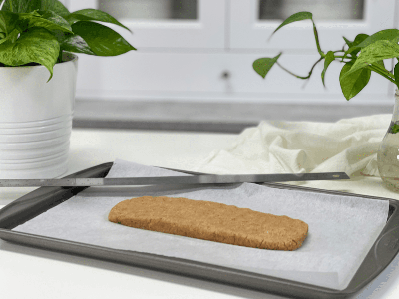
-
Form the raw dough log as indicated in the directions.
-
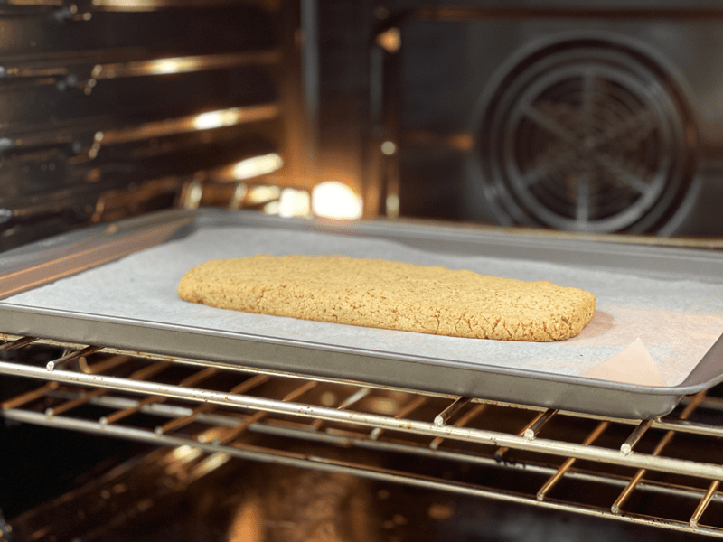
-
As you can see, once done baking, it only darkened just a little bit. Allow to fully cool before cutting.
-
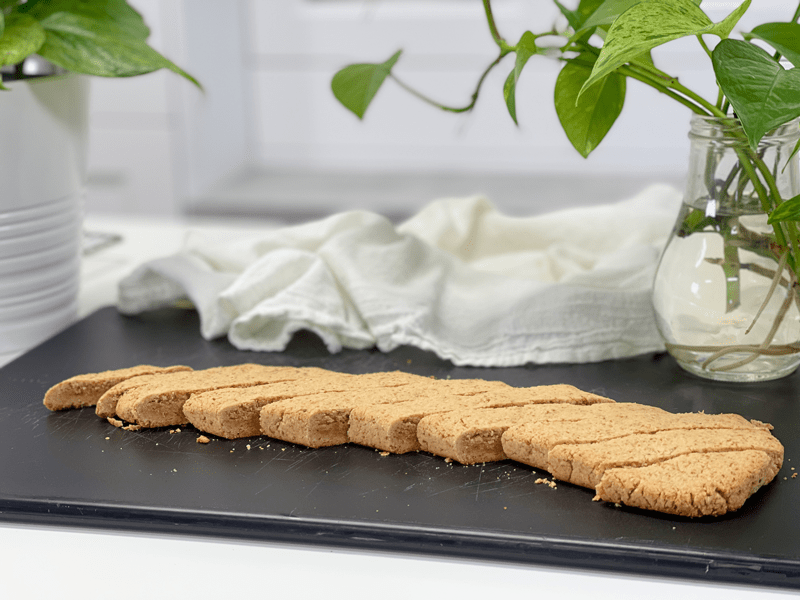
-
Cut at 1/2″ diagonal shaped cookies. The little ends are what I call “Chef’s Reward”–those are for you to use to taste test.
-
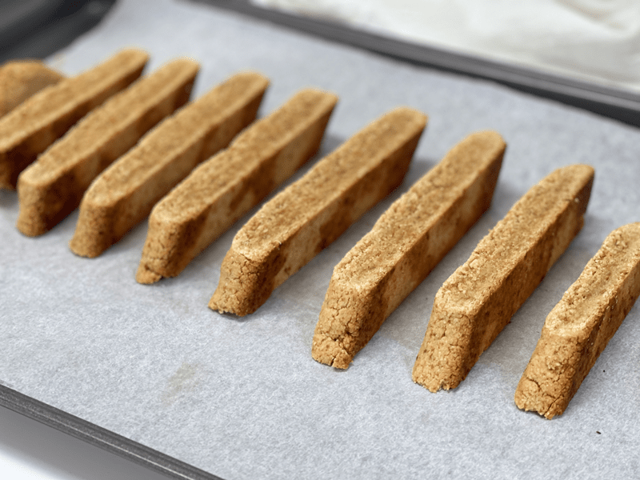
-
Set the cookies back on the baking sheet, cut side down. Bake for 20 minutes.
-
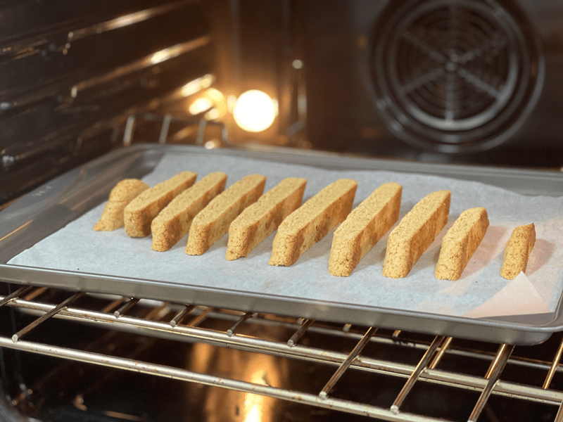
-
After 20 minutes, turn them over to the other cut side and back for an additional 20 minutes.
-
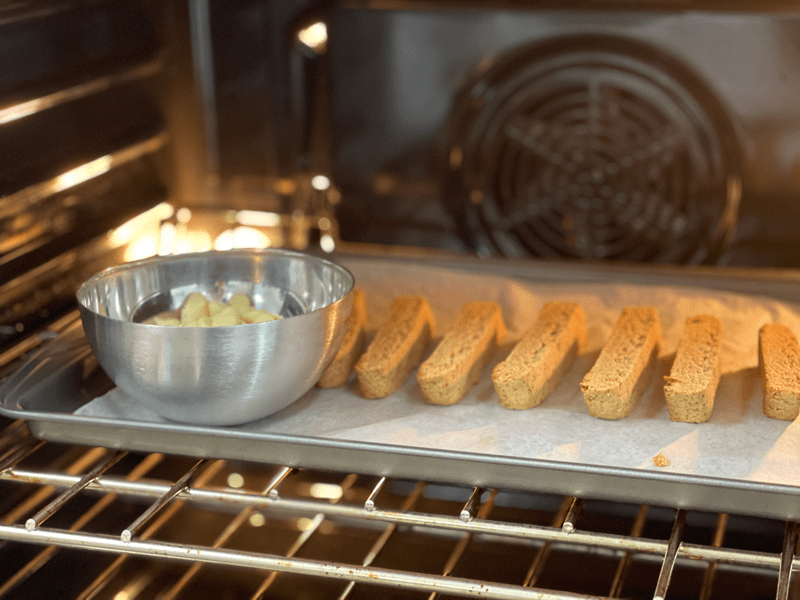
-
Once done baking, turn off the oven, keep the door shut, and let them cool naturally. This is when I place my bowl of chocolate chips into the oven so they can soften while the cookies cool.
-
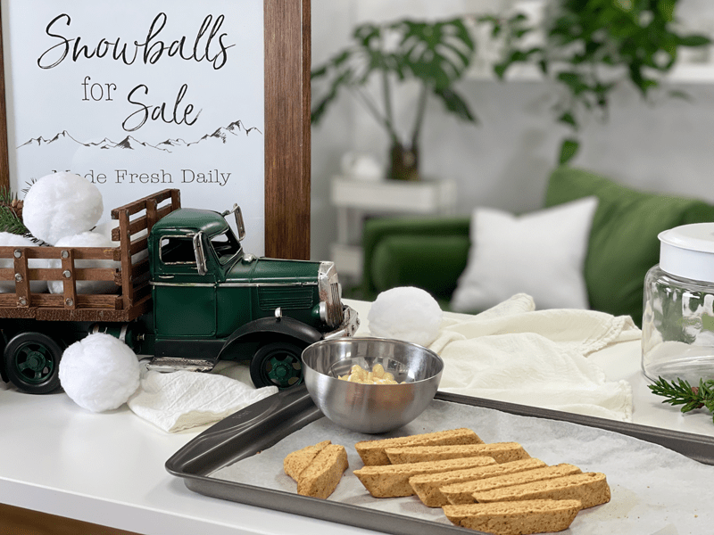
-
Drip, drizzle, or dunk the biscotti in the chocolate and add chopped nuts, sprinkles, or dried fruit.
-
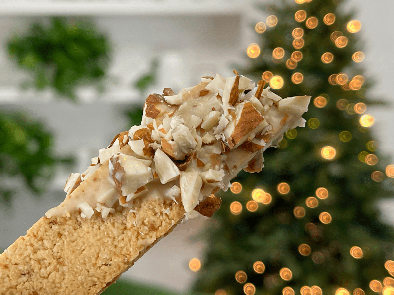
-
Here I used chopped almonds…
-
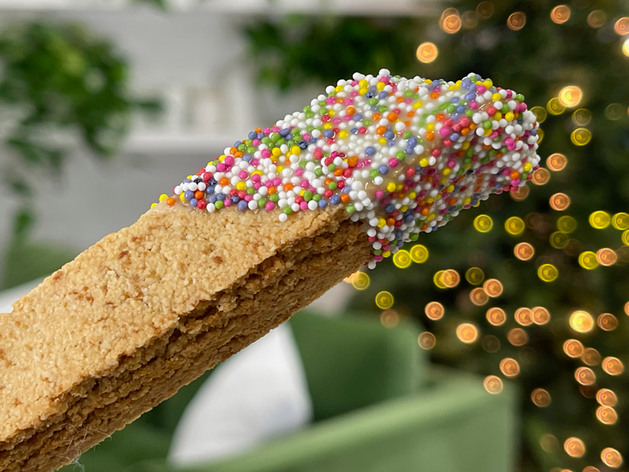
-
And here I used a healthier version of sprinkles. I don’t recall where I picked them up, but check your local health food stores.
© AmieSue.com